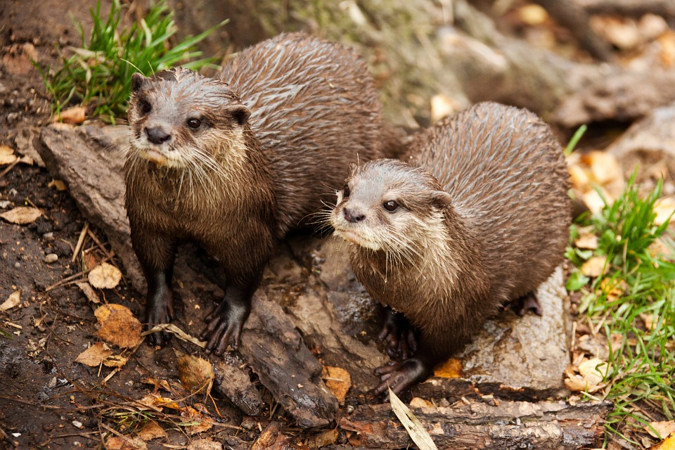
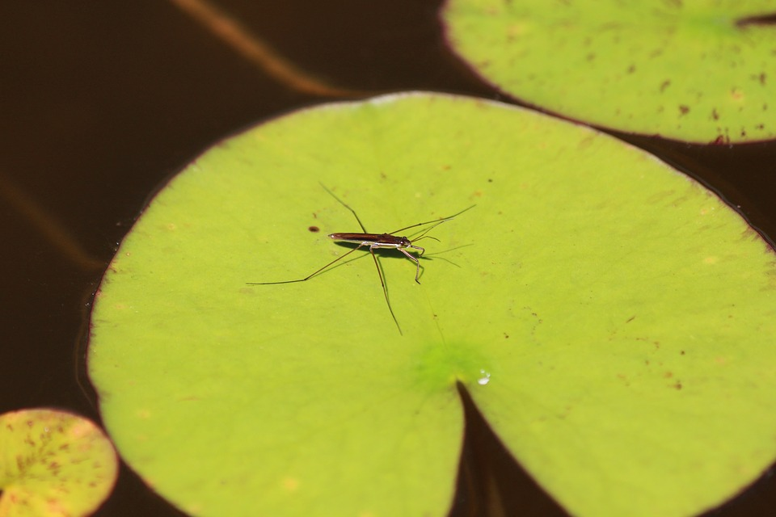
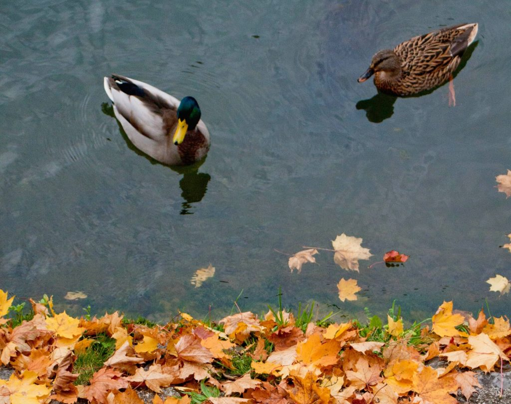
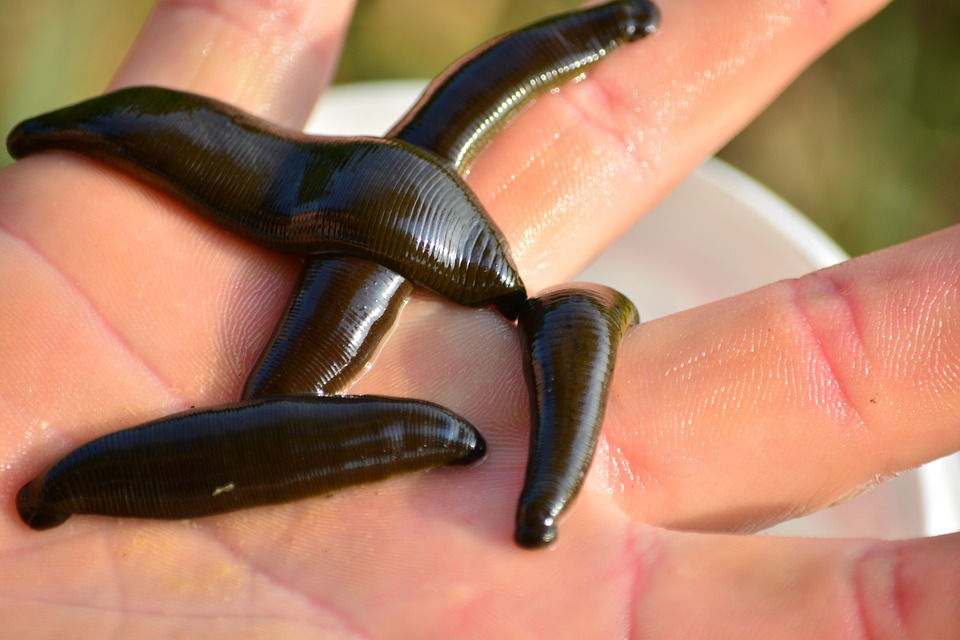
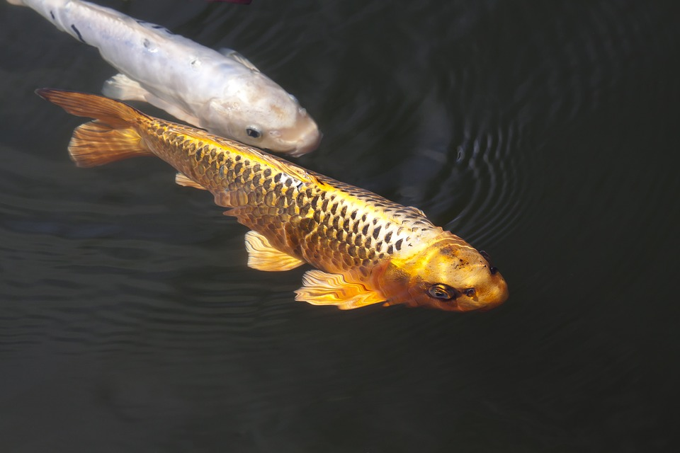
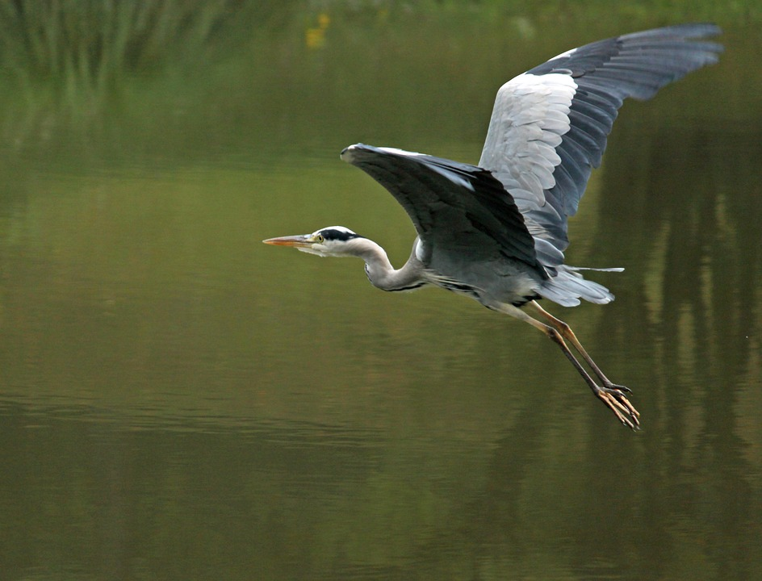
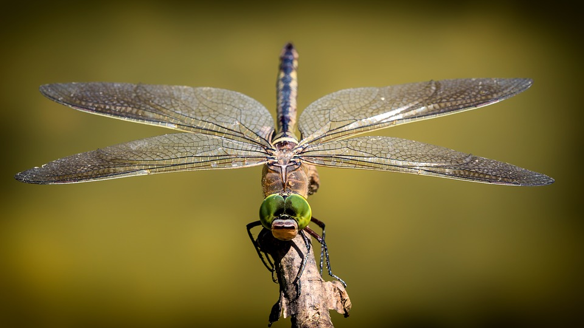
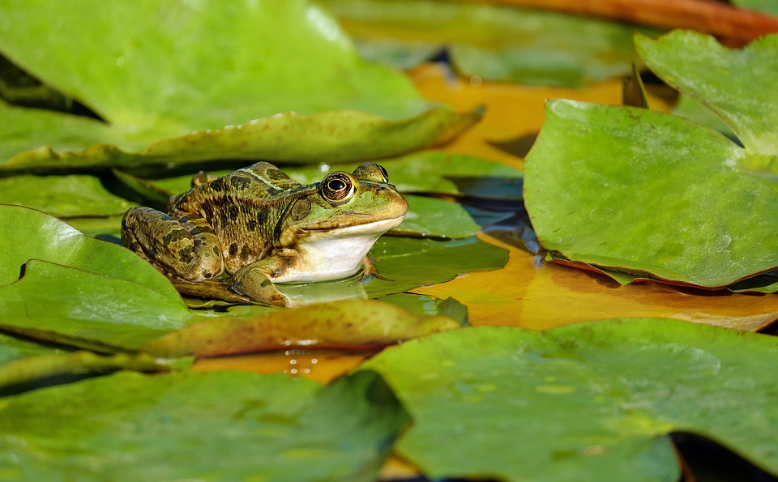

Opredelitve mokrišča se med ustanovami in državami razlikujejo. Ramsarska konvencija iz leta 1971 opredeljuje izraz mokrišče z naslednjo razlago: »Mokrišča so območja močvirij, nizkih barij, šotišč ali vode, naravnega ali umetnega nastanka, stalna ali občasna, s stoječo ali tekočo vodo. Voda je sladka, polslana ali slana, vključno z območji obalnega morja, kjer voda ob osekah ne presega globine šest metrov«.
Mokrišča ponujajo rastlinam najrazličnejša posebna rastišča. Mnoge vodne ali močvirske rastline imajo gobasta stebla in liste, ki prenašajo zračni kisik v korenine in jim omogočajo dihanje. Pri nekaterih zgradba listov omogoča plavanje na vodi. Rastline težko vsrkavajo slano vodo, zato vsaj občasno živijo tako rekoč v sušnih razmerah. Med rastlinami na obrobju potokov in jezer nekatere držijo pokonci olesenela stebla, zato jih ne moti kratkotrajno nihanje vodne gladine. Najznačilnejše rastline v mokriščih so trsje, šasi, rogozi, ločje itd. V vodnatih mokriščih živi veliko rib, dvoživk in nevretenčarjev, ki so hrana za druge živali, zlasti za vodne ptice. V mokriščih živi veliko vrst plazilcev, med njimi krokodili, aligatorji in sladkovodne želve in kač. Med sesalci se jih je veliko prilagodilo mokriščem, zlasti med glodavci: na primer bobri, pižmovke, nutrije in kapibare. Med večjimi rastlinojedci pa lahko najdemo povodnega konja in vodnega bivola.
Živali v stojece vode lahko razdelimo na 5 vrste
V stoječi vodi živi živalski plankton, na primer ličinke polžev in školjk, drobni rakci, živalski enoceličarji. Ti predstavljajo hrano večjim živalim, na primer ribam . Tu najdemo tudi različne vrste žab, kačo belouško, kačje pastirje, žuželke, polže, pijavke, rake …
Vidri
Vodni drsalec
Raci
Pijavke




ribe
Čaplja
Kačji pastir
Žaba



